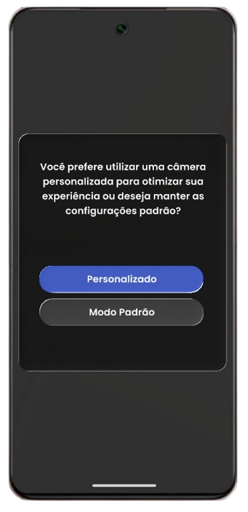
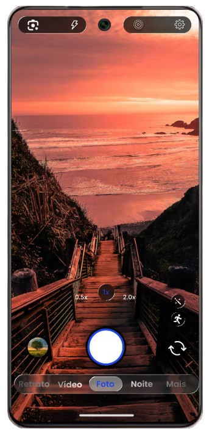
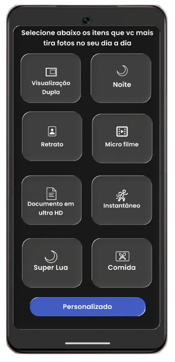
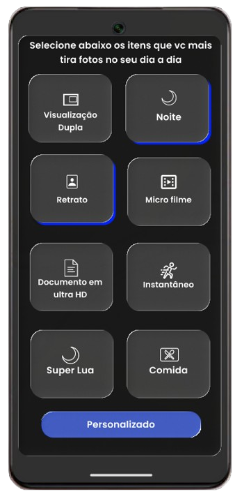
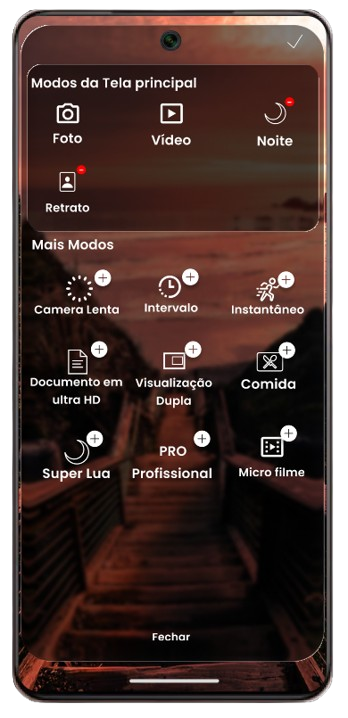

01

Experiência Personalizada
Ao abrir a câmera pela primeira vez, o usuário poderá escolher entre utilizar uma experiência personalizada, adaptada às suas preferências, ou manter o modo padrão do sistema do celular.
UX/UI Design Premium para Câmera
Uma interface moderna, fluida e intuitiva que transforma a captura em algo sofisticado — projetada para impressionar.

A Solução
A maioria dos aplicativos de câmera entrega a mesma interface padrão para todo mundo, obrigando o usuário a navegar por menus cheios de funções que ele nunca usa. O Camera Jovi resolve isso deixando cada pessoa montar a própria experiência: o app aprende quais recursos importam para o seu dia a dia e reorganiza a interface em torno deles, tornando a captura mais rápida, intuitiva e esteticamente refinada.

Ao abrir a câmera pela primeira vez, o usuário poderá escolher entre utilizar uma experiência personalizada, adaptada às suas preferências, ou manter o modo padrão do sistema do celular.

Após escolher a experiência personalizada, o usuário poderá selecionar quais recursos da câmera fazem mais sentido para o seu dia a dia. A interface permite destacar funções favoritas e adaptar rapidamente o aplicativo ao estilo de uso de cada pessoa.

O usuário poderá marcar os recursos desejados para compor sua experiência personalizada. Os itens selecionados recebem um destaque em azul, indicando que foram ativados e adicionados à configuração da câmera.
Com as preferências aplicadas, a interface da câmera é reorganizada para destacar os recursos selecionados pelo usuário, proporcionando uma experiência mais rápida, prática e personalizada no uso diário.

Caso queira alterar suas preferências futuramente, o usuário poderá acessar a opção "Mais" dentro da interface da câmera e selecionar o botão "Editar", modificando os recursos escolhidos de forma rápida e prática.
Público-Alvo
A solução foi pensada para pessoas que usam a câmera do celular diariamente e querem uma interface que se adapte a elas — e não o contrário.
Usuários que gravam vídeos e fotos com frequência para redes sociais e precisam de acesso rápido a modos e ajustes específicos, sem perder tempo navegando em menus genéricos.
Pessoas que usam a câmera para registrar o cotidiano e preferem uma experiência simples, com apenas os recursos que realmente utilizam em destaque.
Usuários mais avançados que querem controle fino sobre a câmera e valorizam uma interface que possa ser configurada de acordo com seu fluxo de trabalho.
Galeria
Capturas de tela do protótipo mostrando o passo a passo da experiência personalizada, do primeiro acesso à interface final adaptada ao usuário.
Nossa Equipe
Grupo "Da Facul" — quatro integrantes responsáveis pelo desenvolvimento completo da solução, da concepção da ideia ao protótipo final.
RA 569475
Integrante do grupo, atuando no desenvolvimento da solução Camera Jovi.
RA 571353
Integrante do grupo, atuando no desenvolvimento da solução Camera Jovi.
RA 570884
Integrante do grupo, atuando no desenvolvimento da solução Camera Jovi.
RA 568834
Integrante do grupo, atuando no desenvolvimento da solução Camera Jovi.